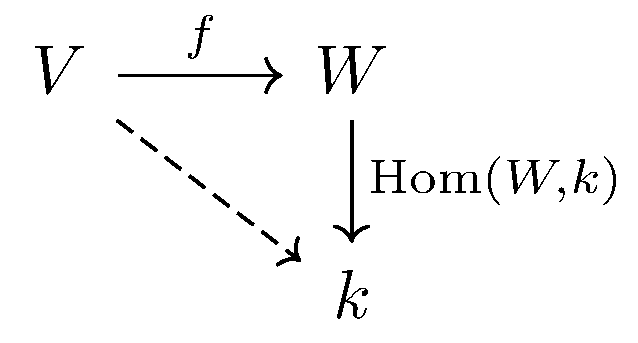
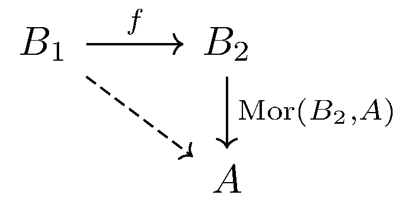

September 15th
Today I learned the definition and some examples of the functor of points, which I think is my prototypical example of a contravariant functor. The most natural example is the contravariant functor $\texttt{Vec}_k\to\texttt{Vec}_k$ taking every space to its dual. Explicitly, our mapping takes objects\[V\longmapsto\op{Hom}(V, k).\]Then for a linear map $f:V\to W,$ we can naturally induce a mapping $\op{Hom}(W,k)\to\op{Hom}(V,k)$ to make the following diagram work.
Explicitly, we take each $g\in\op{Hom}(W,k):W\to k$ to $gf:V\to W\to k.$
Of note is the special role that $k$ plays as a final object: the fact that everyone has nice arrows to $k$ is letting us induce the mapping. This idea lets us define the functor. In general, let $\mathcal C$ be a category, and fix some object $A$ which will serve a similar purpose as $k.$ Then, we define the contravariant functor taking $\mathcal C\to\texttt{Set}$ taking objects\[B\longmapsto\op{Mor}(B,A).\]Then we map arrows $f:B_1\to B_2$ to mappings $\op{Mor}(B_2,A)\to\op{Mor}(B_1,A)$ induced by the following diagram.
Explicitly, for a mapping $f\in\op{Mor}(B_1,B_2),$ we map $g\in\op{Mor}(B_2,A)$ to $gf\in\op{Mor}(B_1,A).$